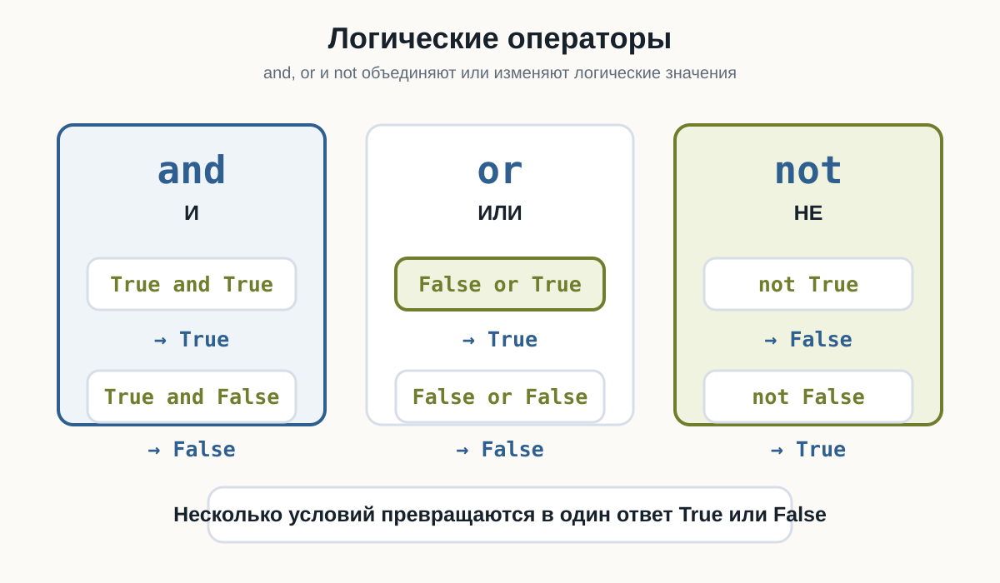
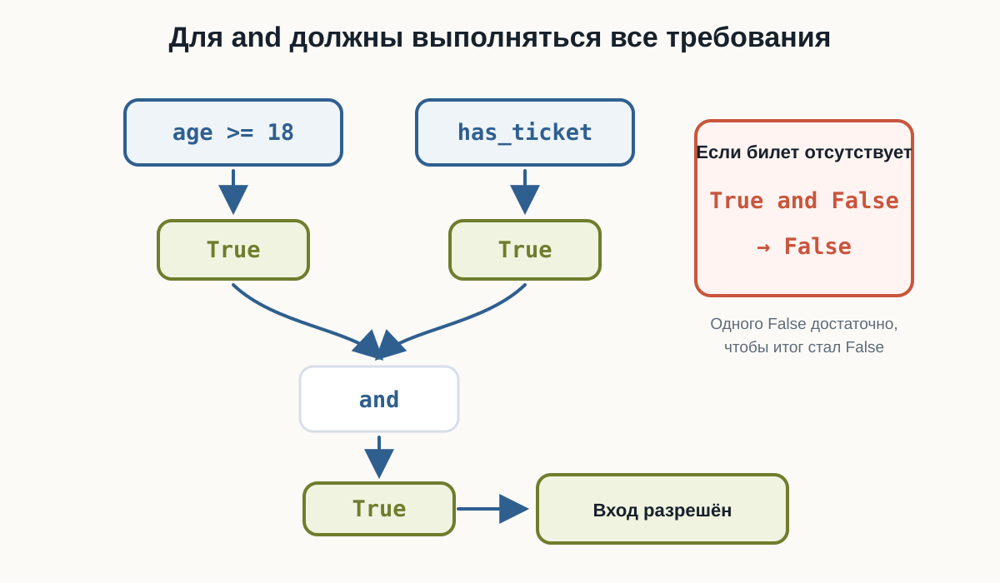
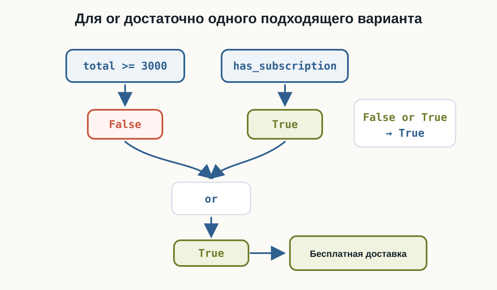
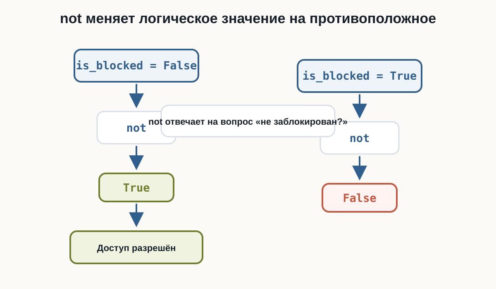
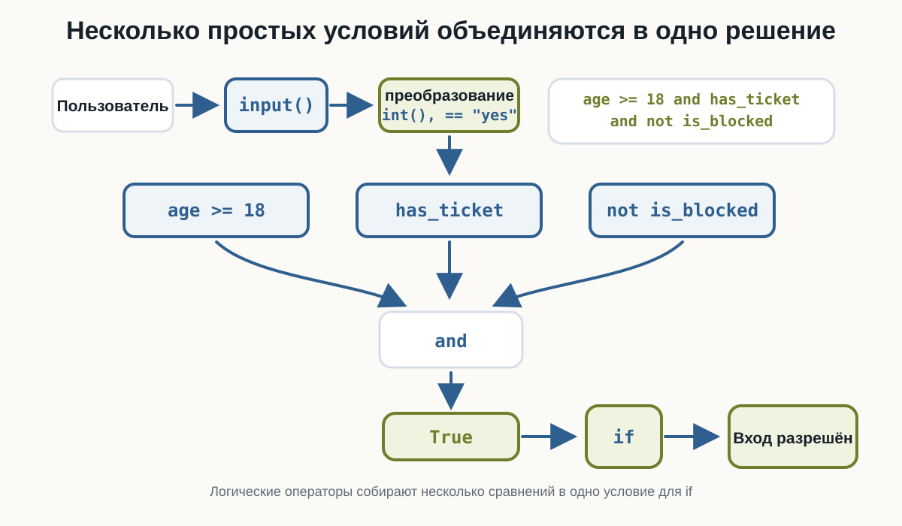

3.8 Логические операции
Главный вопрос главы:
Как объединять несколько условий в одно выражение?
В предыдущих главах мы научились получать логический ответ:
age >= 18
password == "python123"
total >= 3000Каждое сравнение возвращает True или False.
Но реальные решения часто зависят не от одного вопроса, а от нескольких сразу:
возраст подходит
и
билет естьили:
сумма заказа большая
или
есть подпискаДля таких случаев в Python используются логические операторы.
Три логических оператора
В этой главе нужны три слова:
and
or
notИх можно читать почти как обычные русские слова:
and -> и
or -> или
not -> неОни работают с логическими значениями True и False и помогают получить один итоговый ответ.

Проверьте базовые сочетания and, or и not в playground ниже. В HTML можно менять значения и запускать код снова.
Как работает and
Оператор and означает:
оба условия должны быть истинными.
Например:
age >= 18 and has_ticketТакое выражение можно прочитать:
возраст не меньше 18 и билет есть.
Если хотя бы одно условие равно False, весь результат тоже будет False.
Результаты для and:
True and True -> True
True and False -> False
False and True -> False
False and False -> FalseГлавная идея:
andвозвращаетTrueтолько тогда, когда оба значенияTrue.

and внутри условия
Теперь соединим and с if.
Пользователь вводит возраст и отвечает, есть ли билет:
Проверьте несколько вариантов:
20 / yes -> Вход разрешён
20 / no -> Вход запрещён
16 / yes -> Вход запрещён
16 / no -> Вход запрещёнУсловие:
age >= 18 and has_ticketстановится True только в первом случае.
Как работает or
Оператор or означает:
достаточно, чтобы истинным было хотя бы одно условие.
Например:
is_admin or is_ownerМожно прочитать так:
пользователь администратор или пользователь владелец.
Результаты для or:
True or True -> True
True or False -> True
False or True -> True
False or False -> FalseГлавная идея:
orвозвращаетTrue, если хотя бы одно значениеTrue.

or внутри условия
Представим интернет-магазин.
Доставка бесплатная, если:
сумма заказа не меньше 3000
или
есть подпискаПроверьте:
3500 / no -> Доставка бесплатная
1500 / yes -> Доставка бесплатная
1500 / no -> Доставка платнаяВ первых двух случаях хотя бы одно условие истинно.
Как работает not
Оператор not меняет логическое значение на противоположное:
not True
not FalseРезультаты:
not True -> False
not False -> TrueЭто удобно, когда имя переменной описывает запрет или блокировку:
is_blocked = False
not is_blockedТакое выражение можно прочитать:
пользователь не заблокирован.

Сравнение, and, not и if
Проверим пароль и блокировку пользователя.
Для входа нужно:
пароль правильный
и
пользователь не заблокированУсловие:
password == correct_password and not is_blockedсостоит из трёх знакомых частей:
- сравнение
password == correct_password; - объединение через
and; - обращение значения через
not.
Если пароль правильный и is_blocked равен False, вход выполнится.
Приоритет логических операций
У логических операторов есть порядок вычисления:
not
and
orСначала выполняется not, затем and, затем or.
Разберём результаты:
True or False and Falseсначала считается False and False, поэтому итог:
TrueА здесь скобки меняют смысл:
(True or False) and FalseСначала считается True or False, затем результат объединяется с False, поэтому итог:
FalseГлавное правило:
Если выражение можно понять по-разному, используйте скобки.
Сложное условие лучше разделять
Логическое выражение может быстро стать длинным.
Например:
is_admin or (is_owner and not is_blocked)Его можно прочитать так:
доступ есть, если пользователь администратор или если он владелец и не заблокирован.
Здесь скобки помогают явно показать, что not is_blocked относится к владельцу:
is_owner and not is_blockedА имя can_access сохраняет итог:
can_access = is_admin or (is_owner and not is_blocked)
Короткое вычисление
Python не всегда вычисляет всё выражение до конца.
Для and:
False and ...итог уже известен: он будет False.
Для or:
True or ...итог уже известен: он будет True.
На этом этапе достаточно понимать саму идею: Python может остановиться, когда результат уже ясен.
Что важно запомнить
and требует, чтобы все условия были истинными:
age >= 18 and has_ticketor требует, чтобы истинным было хотя бы одно условие:
total >= 3000 or has_subscriptionnot меняет логическое значение на противоположное:
not is_blockedПриоритет логических операций:
not
and
orСкобки помогают читать сложные выражения:
is_admin or (is_owner and not is_blocked)Главная цепочка этой главы:
условие 1
условие 2
↓
and / or / not
↓
одно логическое решение
↓
if
↓
действиеПрактические задания
Задание 1. Вход на мероприятие
Пользователь вводит возраст и отвечает, есть ли билет.
Разрешите вход только если возраст не меньше 18 и билет есть.
age = int(input("Возраст: "))
has_ticket = input("Есть билет? yes/no: ") == "yes"
if age >= 18 and has_ticket:
print("Вход разрешён")
else:
print("Вход запрещён")Задание 2. Бесплатная доставка
Пользователь вводит сумму заказа и отвечает, есть ли подписка.
Доставка бесплатная, если сумма не меньше 3000 или есть подписка.
total = float(input("Сумма заказа: "))
has_subscription = input("Есть подписка? yes/no: ") == "yes"
if total >= 3000 or has_subscription:
print("Доставка бесплатная")
else:
print("Доставка платная")Задание 3. Пользователь не заблокирован
Дана переменная:
is_blocked = FalseВыведите True, если пользователь не заблокирован.
is_blocked = False
print(not is_blocked)Задание 4. Проверка входа
Пользователь вводит пароль.
Вход разрешён, если пароль равен "python123" и пользователь не заблокирован.
correct_password = "python123"
password = input("Введите пароль: ")
is_blocked = False
if password == correct_password and not is_blocked:
print("Вход выполнен")
else:
print("Вход запрещён")Задание 5. Предскажите результат
Не запускайте код сразу.
Определите результаты:
print(True and False)
print(False or True)
print(not True)
print(True or False and False)
print((True or False) and False)Результат:
False
True
False
True
FalseВ выражении:
True or False and Falseсначала выполняется and, поэтому итог остаётся True.
Задание 6. Доступ к файлу
Даны переменные:
is_admin = False
is_owner = True
is_blocked = FalseСоздайте переменную can_access.
Доступ есть, если пользователь администратор или если он владелец и не заблокирован.
is_admin = False
is_owner = True
is_blocked = False
can_access = is_admin or (is_owner and not is_blocked)
print(can_access)Если изменить:
is_blocked = Trueпри is_admin = False, результат станет False.
Что дальше?
Теперь программа умеет объединять несколько условий в одно решение.
Следующий шаг:
повторять действие,
пока условие остаётся истиннымДля этого используются циклы. Они будут отдельной темой.